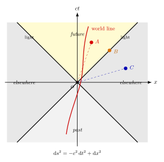

Minkowski 时空 — 距离怎么定义?
从上一节我们知道光线被 Sun 偏折 1.75″ — 但当时我们站在三维欧氏空间里, 时间只是个外挂的参数. 这种"时间在场, 空间在另一边"的图景, 在 1905 年 SR 之后已经站不住了: Lorentz 变换会把时间和空间搅在一起, 不同惯性系下"同时"的两个事件在另一个系里就不同时. 这强烈暗示 — 时间和空间应该是同一个东西的两个轴, 而不是两类对象. 这正是 Hermann Minkowski 1908 年在科隆那场著名演讲里宣布的: "从今以后, 空间本身和时间本身将归于阴影, 只有两者的某种联合才能保持独立的现实性."
这一节我们要把这句话落实成可以计算的数学: 一个四维流形, 加一个 (-,+,+,+) 的度规, 加一组叫"光锥"的几何元素. 一旦写下来, 后续把它推广到弯曲时空就只是把 $\eta_{\mu\nu}$ 换成 $g_{\mu\nu}(x)$, 把直线换成测地线 — 这是第六节及以后要讲的事.
一、为什么不能直接用欧氏距离?
把一个事件标成 $(t, x, y, z)$ 之后, 一个外行的本能反应是: 那两个事件之间的"距离"就该是
$$ d_{\text{欧氏}}^2 = c^2(\Delta t)^2 + (\Delta x)^2 + (\Delta y)^2 + (\Delta z)^2. \tag{1}$$
这里把 $c\Delta t$ 写进去, 只是为了让单位都成米. 这个表达式有一个致命问题: 它在 Lorentz 变换下不是不变的. 取一个沿 $x$ 方向以速度 $v$ 飞过的惯性系, Lorentz 变换给出 $t' = \gamma(t - vx/c^2)$, $x' = \gamma(x - vt)$, 其中 $\gamma = 1/\sqrt{1-v^2/c^2}$. 把 $\Delta t', \Delta x'$ 代入 (1), 你会发现 $d_{\text{欧氏}}^2$ 一般会变 — 这意味着不同观察者会对"两个事件距离多远"给出不同答案, 这种"距离"没有客观意义.
幸运的是, Lorentz 变换确实保留某个东西不变. 直接代入做一次 — 你会发现唯一保留的二次型是
$$ \mathrm ds^2 = -c^2(\mathrm dt)^2 + (\mathrm dx)^2 + (\mathrm dy)^2 + (\mathrm dz)^2. \tag{2}$$
这个量叫"时空间隔" (spacetime interval). 它和欧氏距离只差一个负号 — 但正是这个负号, 把时间和空间区分开来, 决定了物理学允许的因果结构. 任何两个 Lorentz 观察者算出来的 $\mathrm ds^2$ 都一样; 它是一个客观的几何不变量.
用矩阵语言写清楚: 引入 Minkowski 度规
$$ \eta_{\mu\nu} = \begin{pmatrix} -1 & 0 & 0 & 0 \\ 0 & 1 & 0 & 0 \\ 0 & 0 & 1 & 0 \\ 0 & 0 & 0 & 1 \end{pmatrix}, \qquad \mathrm ds^2 = \eta_{\mu\nu}\,\mathrm dx^\mu\,\mathrm dx^\nu, $$
这里用了 Einstein 求和约定, $\mu, \nu \in \{0,1,2,3\}$, $x^0 = ct$. (我们采用 $(-,+,+,+)$ 号差; 部分文献取相反号差, 物理结论一样.) Minkowski 时空, 简言之, 就是 $\mathbb R^4$ 加上这个度规的流形, 记作 $\mathbb R^{1,3}$.
二、光锥 — 把事件分成三类
$\mathrm ds^2$ 既然是不变量, 它的"符号"也是一个客观属性. 任取两个事件, 看它们之间的 $\mathrm ds^2$:
- 类时 (timelike), $\mathrm ds^2 \lt 0$: 一个亚光速观察者可以从一个事件运动到另一个, 这两件事可以有因果联系. 例如你坐在椅子上 1 秒之后还是你, $\Delta t = 1\,\text s, \Delta x = 0$, 间隔 $\mathrm ds^2 = -c^2 \lt 0$.
- 类光 (lightlike, null), $\mathrm ds^2 = 0$: 一束光正好可以从一个事件传到另一个. 这是光锥本身.
- 类空 (spacelike), $\mathrm ds^2 \gt 0$: 两个事件之间无法由任何 $\le c$ 的信号联系起来 — 它们互相处于"elsewhere", 没有因果先后, 不同观察者甚至可以对"哪个先发生"有不同回答.
把所有从原点出发、满足 $\mathrm ds^2 = 0$ 的事件画出来, 就得到一个圆锥 (在 2D 切片里是 45° 斜的两条直线). 这就是光锥 (light cone). 光锥把整个时空切成四块: 未来 (future, 类时间隔 $\Delta t \gt 0$), 过去 (past, 类时 $\Delta t \lt 0$), 类空区 ("elsewhere"), 还有锥面本身 (光的世界线).
光锥的物理意义是不可逾越的: 任何有质量物体的世界线必须始终保持在光锥内 — 它的速度永远小于 $c$. 任何零质量信号 (光、引力波) 沿光锥行进. 任何"超光速"路径会从光锥跑到 elsewhere 区, 但那要求 $v \gt c$, 物理学不允许. 一旦把这件事画清楚, 因果律就内嵌在了几何里.

三、世界线与固有时
一个粒子的运动轨迹在四维时空里是一条曲线, 称作它的世界线 (world line). 对亚光速粒子, 世界线必须始终在光锥内 — 即每一点的切向量是类时的.
沿一条类时世界线, 我们可以定义一个特别有意义的参数: 固有时 $\tau$. 它就是和粒子一同运动的钟所记录的时间. 由 (2):
$$ \mathrm d\tau^2 = -\mathrm ds^2 / c^2 = (\mathrm dt)^2 - \frac{1}{c^2}\bigl[(\mathrm dx)^2 + (\mathrm dy)^2 + (\mathrm dz)^2\bigr]. \tag{3} $$
对一个匀速运动 ($v = $ 常数) 的粒子, 这个式子变成 $\mathrm d\tau = \mathrm dt\sqrt{1-v^2/c^2} = \mathrm dt/\gamma$. 这就是著名的时间膨胀 — 静止系中观察者测得的时间 $\mathrm dt$, 比粒子自己的钟读出 $\mathrm d\tau$ 长 $\gamma$ 倍.
这不是哲学; 它每天都在被检验. 来看一个具体例子: μ 子.
μ 子是宇宙线打入地球大气层后产生的不稳定粒子. 静止时它的平均寿命 $\tau_\mu = 2.20\,\mu\mathrm s$. 即使以光速 $c \approx 3.0\times 10^8\,\mathrm m/s$ 飞行, 经典上 μ 子在衰变前最多走
$$ d_{\text{经典}} = c\tau_\mu = (3.0\times 10^8)\times(2.20\times 10^{-6})\,\mathrm m \approx 660\,\mathrm m. $$
但大气层产生 μ 子的高度通常在 15 km 上下. 按经典逻辑, 几乎没有 μ 子能到达地面. 实际上探测器在海平面每分钟能测到数千个 — 怎么回事?
设 μ 子动量 $p$ 对应能量 $E = \gamma m_\mu c^2$, 一个典型大气层 μ 子能量约 $E \approx 800\,\mathrm{MeV}$, μ 子静止能量 $m_\mu c^2 = 105.7\,\mathrm{MeV}$, 故
$$ \gamma \approx \frac{800}{105.7} \approx 7.57 \approx 8. $$
(为讨论简洁, 我们就取 $\gamma \approx 8$.) 在地面观察者眼里, μ 子寿命被拉长为
$$ t_\mu^{\text{lab}} = \gamma\tau_\mu \approx 8 \times 2.20\,\mu\mathrm s = 17.6\,\mu\mathrm s, $$
(更精确取 $\gamma = 7.45$ 给出 $\approx 16.4\,\mu\mathrm s$.) 它能走的距离也变成
$$ d_{\text{lab}} = c\,t_\mu^{\text{lab}} \approx 3.0\times 10^8 \times 16.4\times 10^{-6}\,\mathrm m \approx 4.9\,\mathrm{km}, $$
而且这只是一个寿命的距离 — 还会有相当一部分 μ 子活得比平均寿命更长. 实际上能穿越 15 km 大气到达地面的 μ 子比例在 SR 预言下完全合理. 1941 年 Rossi 与 Hall 首先在 Mt Washington 顶 (1907 m) 与海平面 (3 m) 之间做了对照测量: 海平面的 μ 子计数率比经典预测高出大约 9 倍, 与 $\gamma \approx 8$ 的 SR 预言吻合. 这就是 Minkowski 几何最干净的实验直证.
等价地, 在 μ 子自己的参考系 (随它一同运动的惯性系) 里, 大气层因长度收缩缩成 $15\,\mathrm{km}/\gamma \approx 1.9\,\mathrm{km}$, 它只需用 $\tau_\mu$ 个寿命的几倍就能穿过. 时间膨胀和长度收缩是同一件事的两副面孔, 都是 (2) 的几何后果.
四、Minkowski 几何的语言: 从 SR 到 GR 的桥
把 (2) 写成 $\mathrm ds^2 = \eta_{\mu\nu}\,\mathrm dx^\mu \mathrm dx^\nu$ 的好处不只是形式优雅, 它还告诉我们怎么把 SR 自然推广到弯曲时空. 一个点状粒子的作用量可以写成
$$ S = -m c^2 \int \mathrm d\tau = -mc \int \sqrt{-\eta_{\mu\nu}\,\mathrm dx^\mu \mathrm dx^\nu}, $$
对它做变分给出自由粒子是直线 ($\mathrm d^2 x^\mu/\mathrm d\tau^2 = 0$) — 这是我们已知的牛顿-Galileo 结论, 只是用更高级的几何讲了一遍.
现在的关键洞察: 这套语言的"几何骨架"和"动力学"是分开的. 几何骨架是度规 $\eta_{\mu\nu}$ 决定的距离感; 动力学是粒子沿测地线 (这里就是直线) 走. 这套语言一旦写下来, 把 $\eta_{\mu\nu}$ 替换成一个随位置变化的 $g_{\mu\nu}(x)$, 公式形式不变, 但"直线"变成"测地线", "光锥"在每一点都还在但会随位置倾斜变形. 这正是 Einstein 1915 年完成的飞跃: 引力 = 让 $\eta_{\mu\nu}$ 变成 $g_{\mu\nu}(x)$. 引力源 (物质能量) 决定 $g_{\mu\nu}$ 怎么弯, 弯了的 $g_{\mu\nu}$ 决定粒子怎么走 — 所谓 Wheeler 那句"物质告诉时空怎么弯, 弯的时空告诉物质怎么动"就是这个意思.
Minkowski 本人没活到看到这个推广 — 他 1909 年因阑尾炎在 44 岁去世, 死前对学生说"我恰好死在相对论开始变得有趣的时候, 真不甘心". 但他的几何语言活了下来. Einstein 起初对 Minkowski 把 SR 几何化的做法颇不以为然, 认为那是数学家的"额外装饰"; 直到他在 GR 里挣扎了七年, 终于意识到要把引力写出来非用这套语言不可. Einstein 后来公开承认: "如果不是 Minkowski, 广义相对论也许还要再等上很多年."
在结束本节之前, 再强调两个易被忽略的细节. 第一, $\mathrm ds^2$ 的符号 (我们取 $-,+,+,+$) 只是约定; 但一旦选定, 后面所有公式都得保持一致 — 不少教科书取相反号差 $+,-,-,-$, 类时间隔变成 $\mathrm ds^2 \gt 0$, 公式形式微调. 物理本身不变. 第二, 光锥结构对应一个指示因果性的"因果未来" $J^+(p)$ 的概念 — 即从点 $p$ 出发可被未来类时或类光信号到达的所有事件的集合. 这个集合的边界正是未来光锥. 黑洞的视界, 后面会看到, 就是把 $J^+$ 截断的那个面; Penrose 图把整个时空压缩到一个有限矩形里, 让你一眼看清谁能给谁发信号. 几何语言一旦上手, 这些后续概念都只是"光锥怎么变形"的细节.
小结
这节我们把"距离"从欧氏的 $\mathrm dx^2 + \mathrm dy^2 + \mathrm dz^2$ 改写成 Minkowski 的 $\mathrm ds^2 = -c^2\mathrm dt^2 + \mathrm dx^2 + \mathrm dy^2 + \mathrm dz^2$, 这是把 SR 几何化的关键一步. 三类间隔 (类时 / 类光 / 类空) 给了时空一个先天的因果结构; 光锥就是这个结构的可视化; 固有时 $\mathrm d\tau^2 = -\mathrm ds^2/c^2$ 是粒子自己钟读到的时间; μ 子的 16.4 μs 给了我们最干脆的实验证据. 接下来一节我们把这套语言给一个匀加速观察者使用 — 你会发现他眼里 Minkowski 时空里居然出现了一个"事件视界", 而它和黑洞视界一脉相承.
▲